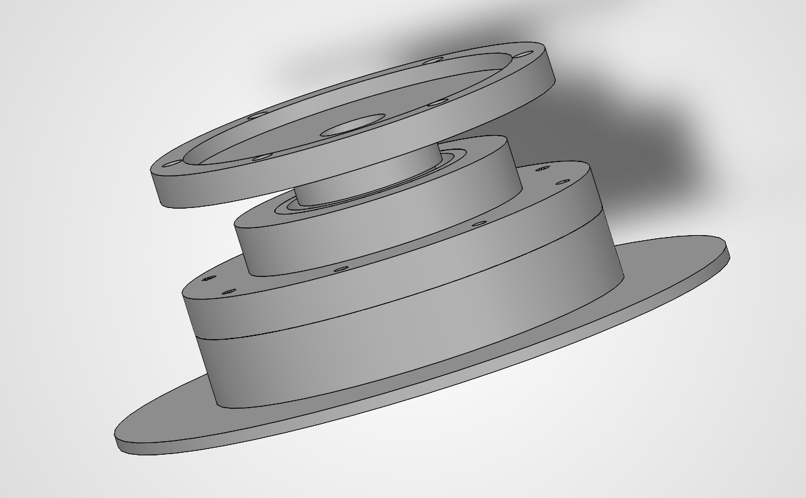
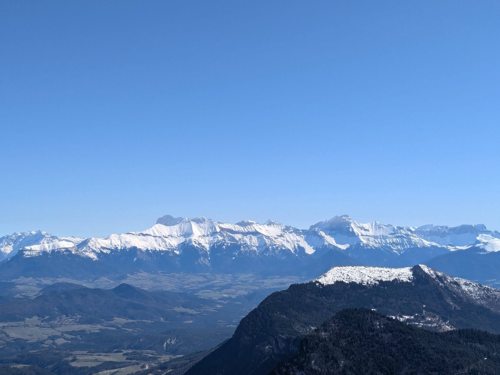
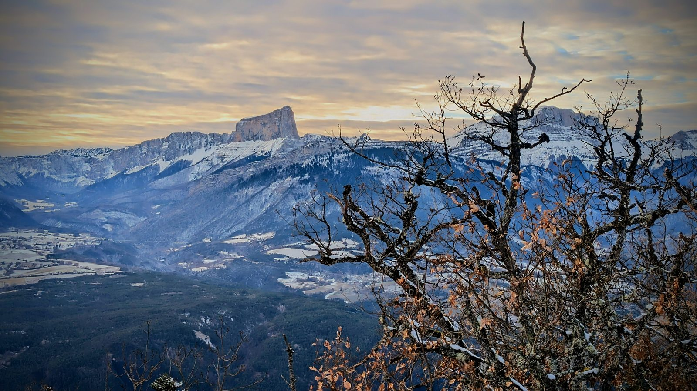
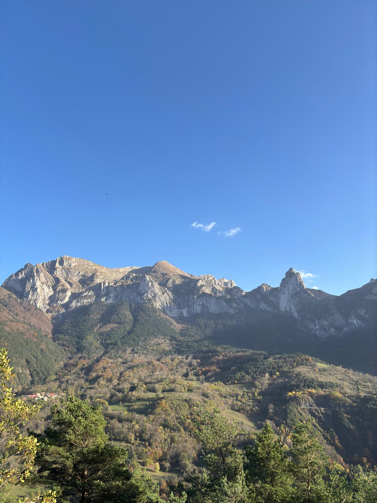

Mes Expériences & Projets
Cliquez sur une expérience pour afficher sa description détaillée, ses visuels et ses documents techniques.

Valmev - Transmission & Prototype Shell Eco-Marathon
Conception CAO de la transmission, instrumentation moteur électrique, usinage et fabrication de la coque en carbone & fibre de verre.
- SolidWorks
- CAO & Plans d'Usinage
- Fibre de Carbone

Robot Tondeuse Autonome (Projet SAÉ 70h)
Conception de A à Z d'un robot tondeuse autonome, gestion du cahier des charges, modélisation mécanique et rapport complet.
- Gestion de Projet
- CAO / Matlab
- Rapport Technique

Stage Mécanique Auto - Acqua Rossa MotorSport
Optimisation châssis pour la piste : suspensions, équilibrage des masses, réglage du carrossage/pincement et réparation fibre de verre.
- Liaison au Sol
- Réglage Châssis
- Sport Auto

Exploitation Agricole - La Lavardoune
Maintenance de machines agricoles, gestion opérationnelle des livraisons et travail d'équipe sur le terrain.
- Maintenance Moteur
- Organisation
- Logistique
À Propos de Moi
Actuellement étudiant en cycle ingénieur spécialité Mécanique et Énergétique à l'INSA Hauts-de-France (Valenciennes), je suis passionné par les systèmes mécaniques, le sport automobile et la conception de prototypes.
Fort d'expériences en association de compétition d'efficience énergétique, en mécanique de précision et en gestion de projets académiques, je recherche un stage pour appliquer mes compétences techniques en ingénierie.

Me Contacter
Vous souhaitez échanger sur une opportunité de stage, un projet d'ingénierie ou en savoir plus sur mon parcours ? N'hésitez pas à me contacter.
Téléphone : +33 6 48 20 22 61
Email : mathis.terrier11@gmail.com